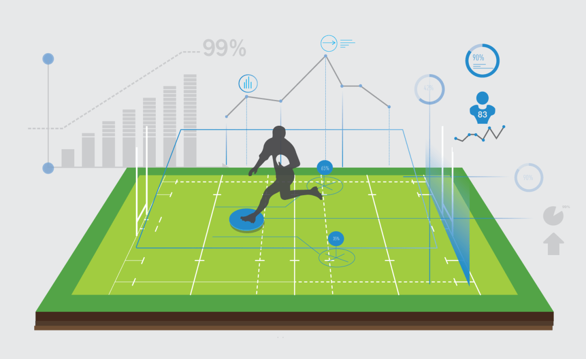

Passions and Hobbies
As you may be able to tell from my academic background, I have a passion for many types of sciences, I enjoy actively following new technologies that are imperative in shaping our future. My goal for humanity is to become as self sufficent as possible, for example, a fully autonomous vehicle network that is powered by renewables. In this scenario, traveleing would be more accessable, safer, faster, and cleaner. I believe that using math and science to develop a more smart and autonomous future, will lead to greater quality of life, including increased safety and efficiency, less environmental impact, and more time for us to spend doing things we enjoy most.
 I also have a strong enjoyment for playing and watching sports, or any type of game/activity that involves strategy. To me, sports are a perfect blend of being physically active, while simultaneously requiring an effective strategy/mental awareness. One of my economics and data science courses focused on sports statistics, where we learned about the math behind professional sports decison making, competitive prize distribution, and contracts. A dream of mine would be working for a professional sports organization, utilizing my economic/data science skills to optimize the team's success and the fans' enjoyment.
Below is a link to a Fantasy Football data science project that I worked on using python.
Mindset and Life Outlook
I think the best part of humanity is the interactions we share with each other, whether they are in the workplace, at a sporting event, or at a park. Admiring our differences is key to gaining new perspectives on how people live; since the details of our lives vary greatly, but at the end of the day, we are all human and thrive on our interactions with each other. This is why I dream of a future where we can spend less time worrying about trivial parts of our lives, and more time enjoying and sharing moments with each other.